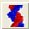
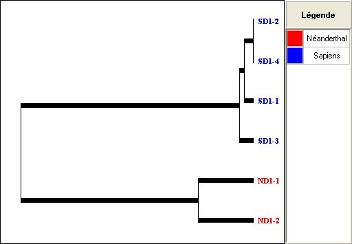
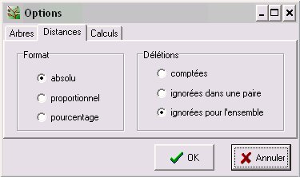
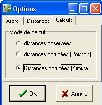
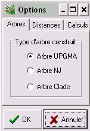
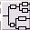
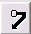

Établir des parentés
à partir d'une étude
moléculaire
Plusieurs fichiers de séquences alignées sont fournis
avec le logiciel. Quelques unes sont adaptées à
l'étude de ces relations de parentés sur l'ensemble du
vivant. D'autres sont appropriées pour mettre en évidence
la notion de famille multigénique ainsi que l'histoire des
allèles d'un gène au cours de l'évolution.
Après avoir choisi la collection, on accède
à ces fichiers par l'icone  ou par le menu Étude moléculaire (l'accès
antérieur par Fichier/Ouvrir a été
conservé). Les fichiers alignés .alp,
spécifiques de Phylogène, comportent des mots-clés
qui permettent de sélectionner rapidement des groupes de
séquences.
Matrice des distances de quelques Primates (nombre de différences)
C'est en particulier le cas des fichiers .edi d'Anagène qui peuvent maintenant être utilisés par Phylogène.
La première chose à faire est de demander l'alignement (bouton aligner). Contrairement à Anagène, toutes les séquences affichées (sélectionnées ou non) sont alignées. Si on veut laisser de côté certaines séquences avant l'alignement, il faut les supprimer avant de faire l'alignement (menu Édition/supprimer les séquences non séléctionnées).
Le travail est ensuite le même que celui qui a été décrit pour les séquences alignées.

Arbre coloré avec sa légende (copié avec le menu Édition/Copier/l'arbre)
Cliquer sur le bouton Options puis choisir l'onglet Distances

absolu : nombre de différences
proportionnel : de 0 à 1
pourcentage : de 0 à 100
L'onglet Calculs permet de demander des corrections :
|
 |
distances observées : pas de correction distance corrigée : une correction est appliquée pour tenir compte de la probabilité qu'il y ait eu 2 changements successifs à certaines positions. |
Phylogène permet de choisir entre 3 méthodes pour construire l'arbre :
|  |
Arbre UPGMA : arbre le plus simple à calculer. Les calculs peuvent être vérifiés à la main pour une petite matrice. Pour être exact, il suppose que l'hypothèse de l'horloge moléculaire est vérifiée (le taux de mutations est constant dans le temps et identique pour toutes les branches), ce qui n'est pas toujours vrai. Arbre NJ (Neighbor Joining) : c'est un arbre qui n'oblige pas à faire d'hypothèse d'horloge moléculaire. La racine représentée est arbitraire et modifiable. Il faut donc utiliser un extragroupe pour enraciner l'arbre de manière raisonnée (voir ci-dessous l'exemple de la construction d'un arbre des Amniotes). Arbre clade : il faut le construire "à la main" par la méthode cladistique. |
| Permuter 2 branches au niveau d'un noeud (fonctionne avec tous les types d'arbre) | |
|  | Afficher les distances sur les branches (arbre UPGMA et arbre NJ) |
|  | Positionner la racine de l'arbre (arbre NJ et arbre clade). |